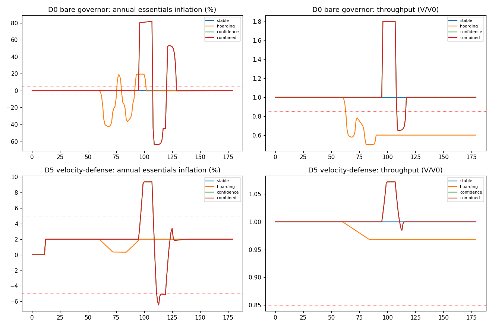

In plain language
Companion to RESULTS - Velocity & Confidence Shock. Companion added July 11, 2026 — the v1–v5-era runs predate the plain-language convention; written from the committed RESULTS as it stands today (including any verification-pass corrections already applied in that file), with no reinterpretation.
The question
Every prior sim formed prices with velocity held constant — money assumed to change hands at a fixed pace. Real crises are velocity events: people hoard, or panic-spend. This run makes velocity endogenous and shockable and asks whether the design holds, testing designs from the bare governor (D0) through demand-side levers (D4: demurrage — a small carry cost on idle money — plus a mild 2% inflation target) to a full velocity-defense stack (D5: D4 plus a velocity circuit-breaker, a stabilization reserve, progressive demurrage, and faster floor indexing).
Read the re-framing first
A July 2026 verification pass re-framed how this run must be read, in three parts. (1) D5 and the RESILIENCE bar are post-hoc: the SPEC pre-registered designs D0–D4 and a ±5% STRICT bar; every design failed STRICT in the confidence scenario, and D5 and the bar it passes were designed after that failure — the results are real, but they are exploratory design iteration, not a pre-registered confirmation, and a fresh pre-registered test of D5 belongs on the pilot's modeling list. (2) The demand-side mitigation dial (mitig_coef = 13) was hand-set and carries the headline results: the committed sweep shows D5 passes hoarding and the confidence RESILIENCE bar at coef ≥ 8, but at coef ≤ 4 even D5 fails both (max inflation 41–52%, throughput 0.56–0.67), and D4 needs coef ≈ 13 and never passes confidence — how strongly small carry costs deter hoarding is an empirical behavioral parameter no simulation can settle. (3) The stabilization reserve is modeled as a costless direct velocity absorber sized ~2× the shock; the caveat on its real-world feasibility is load-bearing, not boilerplate.
What we found
The floor is robust to velocity, full stop: EBI-indexed and self-funded, it passed in every design and every scenario — top-up stayed 0 throughout. Price stability is not automatic. The bare governor is blind to velocity: hoarding halves transactional throughput (0.50) with −42% deflation — a demand-trap contraction the constant-velocity sims cannot even produce — and a confidence run whipsaws +82% then −64%. Demand-side levers fix hoarding: demurrage plus the mild 2% target restores throughput to 0.96 at 2% inflation, passing both bars. The intuitive fix — making the governor watch prices (D3) — is refuted: it worsens creator real income to 0.18 under hoarding, stimulating issuance into an economy where money isn't circulating. The confidence run is bounded and arrested by D5: +9.4% peak inflation, throughput 0.98, recovery to 2% within ~12 months, clearing RESILIENCE on all four scenarios at both 25k and 100k agents — but not STRICT, since +9.4% breaches the ±5% band. Mechanism isolation: the circuit-breaker and the reserve are complementary and both necessary — either alone leaves a 53–55% spike; together, 9.4% — and the reserve must be funded to ≥ ~9 months of absorption capacity or the spike returns.
The honest catch
Verdict: SURVIVES WITH CHANGES. Hoarding is fully repaired; a genuine confidence run is bounded and arrested, not eliminated — which is what real monetary systems achieve, and the white paper restates the inflation claim as conditional on stable velocity, bounded-and-arrested under a shock. But carry the re-framing: the confidence defense is post-hoc and dial-dependent, and the reserve's real implementation must be formulaic, transparent, symmetric, and time-bounded — a discretionary "pause" would reintroduce the capturable chokepoint EDEN exists to remove; that design is a pilot question. Velocity here is reduced-form; shock sizes are swept parameters, not estimates; no exchange-rate layer; not a forecast.
One line
With money's pace of circulation finally allowed to move, the floor still never needed printing in any scenario and hoarding is genuinely solved by a small carry cost plus a mild 2% inflation target — but the confidence-panic defense that bounds the spike to +9.4% and arrests it within ~12 months was built after the pre-registered ±5% bar failed and leans on a hand-set behavioral dial, so it stands as honest, promising design iteration awaiting a fresh pre-registered test, not a confirmed result.
(Dated note, July 18, 2026: this file describes its simulation-era result faithfully and is kept unedited above — but read "self-funded / costs almost nothing" as an in-model result from this early chassis, since retired as a general claim. The harder open-economy and rebuild tests (v6.x, v13.1) found no scenario where the floor fully pays for itself; every real activation needs a real funder, and the durable result is that a funded floor is cheaper than traditional welfare delivery. The current framing lives in the reframed public docs and the Decision Record.)
Words used here (added July 18, 2026 — plain-language house rule; the text above is unchanged). Endogenous — determined inside the model rather than set by hand; velocity now responds to conditions and can be shocked. Governor — the automatic, committee-free rule setting how fast new EVE is minted. Throughput — how much real buying-and-selling is actually happening, with 1.0 as normal; 0.50 means half the economy's transacting stopped. Deflation — falling prices — which sounds pleasant and isn't: it rewards hoarding and starves sellers. Circuit-breaker — an automatic emergency brake that trips at a threshold, like a stock exchange halting trading in a crash. Stabilization reserve — a pre-funded buffer that absorbs a panic's rush until it passes; modeled here as free and frictionless, which is exactly the flagged caveat. EBI — the essentials-basket index: what basics actually cost, measured locally; "EBI-indexed" means the floor tracks it automatically. Top-up — extra minting to cover the floor if its funding slice falls short; it stayed at zero throughout. Issuance — the creation of new money. Pre-registered — the pass/fail bar was written down before running, so results can't be graded on a curve. Post-hoc — designed after seeing the failure — honest iteration, but not a pre-registered confirmation. Reduced-form — deliberately simplified to only the parts that matter for this question; velocity here is a sketch, not a mechanism. Discretionary — left to a human's case-by-case judgment — precisely what the reserve must not be, since a discretionary pause is a capturable chokepoint.
Figures

Technical results
Closes the program's standing limit — "quantity-theory price formation," i.e. constant velocity (00 INDEX) — and answers White Paper/EDEN Red-Team — Second Pass §A2. Pre-registration and method are in the companion … (SPEC). Numbers from results_velocity.json (N=25,000) and results_velocity_100k.json (N=100,000). Existence/robustness demonstration, not a forecast.
⚠️ RE-FRAMED (July 2026 verification, item 4) — pre-registration honesty + the dial that carries the result
Three corrections to how this run should be read. (1) D5 and the RESILIENCE bar are post-hoc. The SPEC pre-registered designs D0–D4 and the ±5% STRICT bar; every design failed STRICT in the confidence scenario; D5 and the RESILIENCE bar it passes were designed after that failure. The results below are real, but they are exploratory design iteration, not a pre-registered confirmation — a fresh pre-registered test of D5 belongs on the pilot's modeling list. (2) The demand-side mitigation dial (mitig_coef = 13) was hand-set and carries the headline results. The committed sweep (mitig_coef_sweep.py / results_mitig_sweep.json, July 2026) shows: D5 passes hoarding and the confidence RESILIENCE bar at coef ≥ 8 (i.e., demurrage + inflation-target removing ≥ ~55% of desired hoarding) — at coef ≤ 4, even D5 fails both scenarios (max inflation 41–52%, throughput 0.56–0.67). D4 needs coef ≈ 13 (~90% mitigation) for hoarding and never passes confidence. How strongly small carry costs deter hoarding is an empirical behavioral parameter no simulation can settle — it is now on the pilot list alongside liveness and the oracle. (3) The stabilization reserve is modeled as a costless direct velocity absorber sized ~2× the shock — the MD's existing "pilot question" caveat on its feasibility should be read as load-bearing, not boilerplate.
Reading note. Criteria fixed before the run (SPEC). Reported per (design × scenario), and against both bars the design owner asked for: STRICT — |annual essentials inflation| ≤ 5% throughout and floor self-funds; RESILIENCE — the shock is bounded (≤ 20%/yr), arrested (back in the ±5% band within 12 months of the shock ending), the floor's real value never breaches the basket, and throughput + creator real income recover. Designs: D0 bare M-governor · D1 +demurrage · D2 +mild inflation target · D3 +price-aware (Taylor) governor · D4 demand-side combined (demurrage + mild inflation) · D5 = D4 + velocity circuit-breaker + stabilization reserve + progressive demurrage + faster floor indexing.
The framing (which is the whole point)
The entire program forms prices by price = price0 · (M/M1)^φ / S — quantity theory with velocity held constant. The governor targets net issuance (M-growth) and is therefore blind to velocity V. This model makes V endogenous and shockable (M·V = P·Y) and asks whether the design holds. Nothing else changes from EVE Sim v3.
The result — the floor is robust to velocity; price stability must be engineered for it
| Design | stable | hoarding | confidence | combined | STRICT / RESIL |
|---|---|---|---|---|---|
| D0 bare | 0.0%, thru 1.00 ✓ | thru 0.50, defl −42% | infl +82% / −64% | +82% | only stable |
| D4 demand-side | 2%, 1.00 ✓ | infl 2%, thru 0.96 ✓ | infl +55% | +55% | STRICT: stable+hoarding · RESIL: +hoarding |
| D5 velocity-defense | 2%, 1.00 ✓ | 2%, 0.97 ✓ | infl +9.4%, thru 0.98, floor ✓, recovers | +9.4% | RESIL: all four · STRICT: stable+hoarding |
Findings, in order:
1. H0 confirmed — the harness is sound. With velocity pinned (stable), D0 reproduces EVE Sim v3 exactly: 0.0% inflation, throughput 1.0, floor self-funded (top-up 0), p10 never below basket. Relaxing velocity adds an axis; it does not break the validated core.
2. H1 confirmed — the governor is blind to velocity. Every design passes the floor criterion in every scenario (it is EBI-indexed, so the poverty guarantee holds mechanically), but the bare governor fails the moment velocity moves: hoarding collapses transactional throughput to 0.50 (a demand-trap contraction the constant-velocity sim cannot produce) with −42% deflation; a confidence run drives a +82% then −64% whipsaw the slow one-way governor cannot catch.
3. Hoarding is solved by demand-side levers (D4). Demurrage + a mild 2% inflation target restores circulation (throughput 0.96) and holds inflation at 2% — passing both bars under hoarding. The mechanism: a guaranteed floor + zero-carry money makes holding rational; a small carry cost keeps money moving. This is not something the issuance governor can do, and the intuitive "make the governor watch prices" fix (D3) is refuted — it does not help and worsens creator real income under hoarding (to 0.18), because it stimulates issuance into an economy where money isn't circulating.
4. The confidence run is bounded and arrested by D5 — resilience, not strict. Adding the velocity-defense stack holds the confidence spike to +9.4% peak inflation, keeps throughput at 0.98 (no demand trap), protects the floor throughout, and recovers to 2% within ~12 months — clearing the RESILIENCE bar on all four scenarios at both 25k and 100k. It does not clear STRICT: the +9.4% breaches the ±5% band. That gap is the honest headline: a genuine confidence run can be bounded and arrested, not eliminated — exactly what a real monetary system achieves, and a claim EDEN can defend, where "±5% through any panic" would be overreach.
![Figure. D0 bare (top) vs D5 velocity-defense (bottom): annual essentials inflation and transactional throughput across the four scenarios. D0 whipsaws ±80% and halves throughput; D5 holds inflation near 2% with a bounded +9.4% confidence spike (it nicks the −5% band on the rebound — the strict miss) and throughput pinned in [0.97, 1.07].](fig_velocity.png)
What actually does the work (mechanism isolation, confidence scenario)
| Configuration | peak inflation | resilience |
|---|---|---|
| circuit-breaker only (no reserve) | 55% | ✗ |
| reserve only (no breaker) | 53% | ✗ |
| both (D5) | 9.4% | ✓ |
The circuit-breaker and the stabilization reserve are complementary and both necessary — neither alone clears resilience. The reserve caps the spike's level (it absorbs ~85% of the excess velocity); the breaker caps the crash's rate, which is what prevents the post-spike deflation from triggering a secondary-hoarding whipsaw. Two further notes from the sensitivities:
- The reserve must be adequately funded — peak inflation is 9.4% at ≥ ~9 months of absorption capacity but 53–55% at ≤ 3 months. The stabilization reserve's capitalization is a first-class design parameter, not a detail.
- Faster floor indexing is precautionary, not load-bearing here. Once the spike is bounded to +9.4%, the floor's 1.10× multiplier already absorbs the indexing lag — p10 stays at 1.157× the basket even with a 3-month lag. It earns its place only as insurance against a larger/faster spike.
- Progressive demurrage modestly shrinks the hot money that can flee, but a real panic is not stopped by a carry cost — so this run credits demurrage with at most ~40% mitigation of the flight, and lets the breaker + reserve do the heavy lifting.
Scale check (100k)
Re-running D0, D4, and D5 at N=100,000 reproduces the 25k inflation paths to the third decimal in every scenario (the macro price path is scale-invariant; agent count affects only cross-sectional noise). The result is not an artifact of the smaller run.
Verdict
SURVIVES WITH CHANGES. The poverty floor is robust to velocity (indexed, self-funded — top-up stayed 0 in every scenario). Price stability is not automatic and must be engineered: hoarding is fully repaired by demurrage + a mild inflation target (both bars); a confidence run is bounded and arrested by a stabilization reserve + velocity circuit-breaker (resilience bar, all scenarios) but is not held inside ±5% (strict bar). The design adopts these as the D5 configuration; the white paper restates the inflation claim as conditional on stable velocity, bounded-and-arrested under a shock (v1.3 §7.4, gate 5). The intuitive governor-tuning fix is refuted.
Honest limits
- Reduced-form velocity (adaptive expectations + hoarding deadband + capped panic mitigation), not a microfounded portfolio choice; shock sizes and sensitivities are swept parameters, not estimates — this shows what happens if
Vmoves and which mechanisms bound it, not how likely or large a real shock is. - The reserve is modeled as a velocity absorber with finite monthly capacity; a real implementation (term lock-ups, a buy-side reserve at the bridges, redemption throttling) must be designed to be formulaic, transparent, symmetric, and time-bounded — a discretionary "pause" would reintroduce the capturable chokepoint EDEN exists to remove. That design (and its own attack surface) is a pilot question, not settled here.
- Throughput coupling (machine-pay + discretionary engagement scale with circulation) is the modeling choice that lets a demand trap appear at all in a quantity-theoretic skeleton — stated plainly.
- No exchange rate. Real purchasing power during a spike also depends on convertibility (Second-Pass §A1), one layer up and not modeled here.
- Fixed population, single 15-year horizon, calibrated (not estimated) parameters, not a forecast.
Files
velocity_confidence_sim.py (runnable; EVE_N / EVE_DESIGNS / EVE_TAG env vars) · results_velocity.json (25k, all designs × scenarios, both bars) · results_velocity_100k.json (100k confirmation) · fig_velocity.png · pre-registration ../EVE Sim v3 - Velocity & Confidence Shock (SPEC).md. Maps to: White Paper/EDEN White Paper v1.3 §7.4 + Appendix A.8 + §16 gate 5; Second Pass §A2; retires the "constant velocity" line in 00 INDEX.
Raw data
⬇ results_mitig_sweep.json⬇ results_velocity.json⬇ results_velocity_100k.json